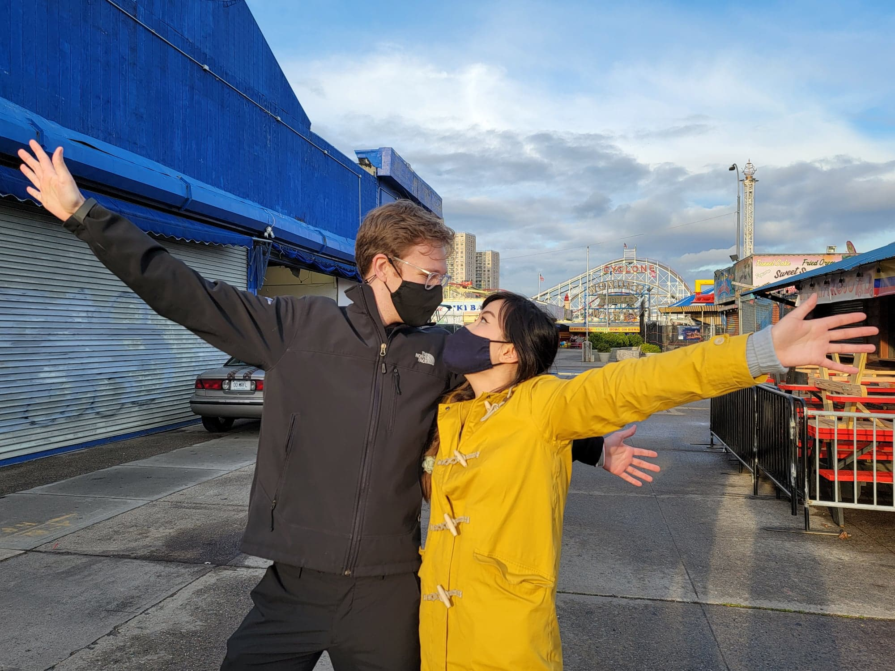
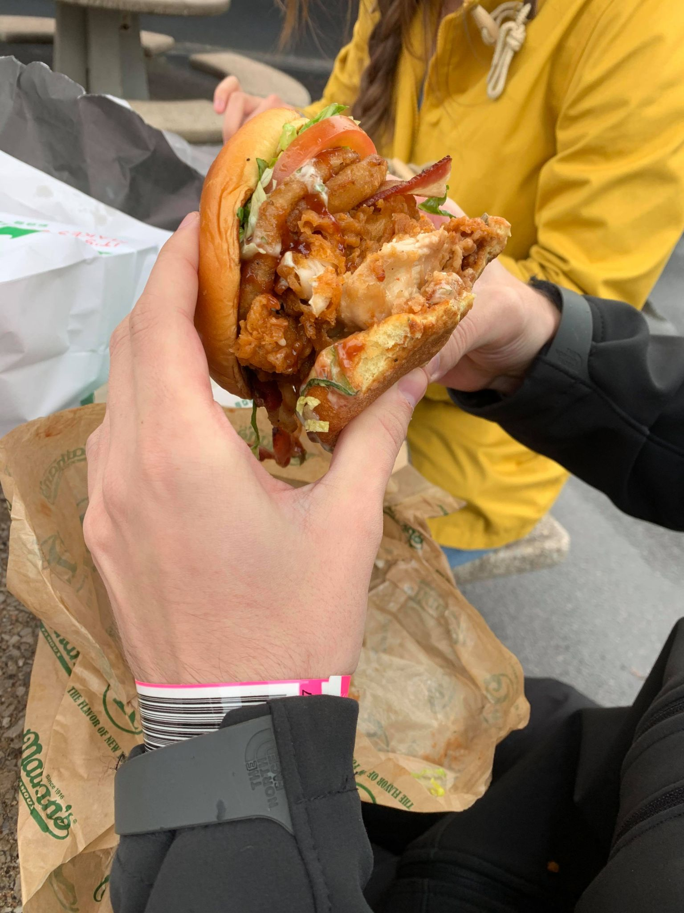

I haven't done this in a while and I didn't take notes on what I did every day, so forgive me if I forget a few things.
After writing the journal entry and attending the practice session for Solid World, I don't remember what I did. :(. I had to have done some development on something, but according to github I didn't commit anything.
What I do know is that I started the first recording of a series that should be fun. I enjoy planet coaster, and I'd love to use its architecture tools to make a YouTube series where I just build buildings. I found a good plot to place a house Atlanta and researched the zoning restrictions on that plot. Then I went into Planet Coaster and began building it.
On Friday, I held the Solid Networking meeting. Few people showed up this time, but we had a good talk. There was one person who I never heard of before and I should've gotten his contact information. But, he's raised some money for his Solid project, which has a new Pod.
I then edited a new video for the video series highlighting the even.
I'm sure I did something else on Friday, but I can't remember. Maybe I played Minecraft with James. Idk
This was a big day. Ailin and I took a trip to Roosevelt Island, then we rode a ferry home. Quite fun! Check out these pics:
Also, apparently this was the day I started working on a new Solid Devtool. It's called a "Subscribable Dataset." It follows the RDFJS dataset spec, but has additional methods that turn it into an event listener. This library with be the low-level basis of the new dev tools that will make up the next-gen-databrowser.
In addition to this, I got a report that my group chat on Liqid Chat with the most members was overloading its Solid Pod because its ACLs were too big.
I don't think I did anything on Sunday. It's not that I don't remember, it's that I remember not doing anything.
On Monday, I got to work fixing that ACL bug. Turns out I misunderstood how to use the Inrupt Dev tools, so I corrected that and deployed the fix. Now, group chats load a lot more quickly! I'm glad this was found and fixed before Solid World because that problem got worse with every person who was added. So having a ton of people coming into a chat at once would be disasterous.
In the evening, I shared the next chapter of "Baby's First Roadtrip," now called "Rebecca's First Roadtrip" with Mindy, and her reaction was amazing. She usually has a very positive reaction but I can tell that Mindy particularly likes this book, and the choose your adventure format worked well.
Tuesday was a day defined by a lot of reporting. I continued work on the devtools, but found that there was no implementation of the "Dataset" interface defined in RDFJS. This was baffling to me and I emailed Ruben about it and he didn't know anyone who had either. This is the annoying thing about RDF tools, you think you can depend on them but there's always something that's underdeveloped. In this case, a full specification for the RDFJS dataset was written, people were told they should follow that specification, yet there isn't a single library that does. Through asking around I eventually found one that's the closest, graphy's "fastDataset", but it does not follow the spec exactly. So, in the interest of doing the right thing for interoperability, I decided to build my own.
But, in building my own, I found that the official typescript typings of the interface were wrong. So I reported it and wrote a fix, but apparently that fix can't be committed officially until another unrelated argument between two of the maintainers is solved. And if it goes like anything else in the Semantic Web ecosystem, that will probably take months to happed. :(. This is why I want to have my own suite. I can't depend on university students and professors maintaining their stuff only when it becomes convenient to them.
I also hopped onto another problem in Liqid Chat: Emoji Encoding. Whenever you type and emoji and it saves to a Pod, it comes back from the Pod as a Chinese character. I tracked down the problem to N3 changing emojis, but the maintainers of N3 say that this is rdflib's fault, so I reported it to rdflib and still haven't gotten a response. At this point, the easiest solution is forking N3 and removing its special character parser. But, I still don't like that. Forking isn't a great solution.
In the evening, I talked with Michael Boseman again. We drilled a new 30 second and 2 minute pitch, and that feels fantastic. I need to call him again to drill the conclusion, then he says he'll introduce me to some investors. He's been an amazing help.
I started the day by talking with Tim. We just shared some of the technical things that we were working on. I also mentioned that I had an idea of how a small blockchain solution could work into th Solid ecosystem. He didn't seem to like it very much.
I'm pretty sure that I did more work on the Dataset, but I didn't seem to commit anything that day, so I'll just roll my report on that into the next day.
In the evening I met up with Sai again. He's doing pretty well. He's about to get a multi-million dollar pay out from the company he's working IPOing. Sometimes I think about if I made the wrong decision. If I had just worked for a series-C mortgage company, I'd be sitting pretty well financially. Or if I had chosen AirBnB over Inrupt. Jonathan certainly got a pretty penny from that. But, I still feel like I'm in a good position despite that.
We went to a restaurant in Chinatown and caught up. He recommended an Angel Investor and connected me. I'm having coffee with him next week!
Thursday was the big Solid World presentation and it went off without a hitch! People loved the rhyme and there were no major glitches detected in the group chat when almost 50 new people signed up at once! The only thing people didn't like was that apparently scrolling is reversed on multiple machines. No idea what's causing that.
I also got a response from Ruben T on RDFJS that really surprised me. One thing he said was "I don’t have a lot of experience with the Dataset interface, so I have no idea tbh." despite the fact that he is credited as one of its authors. He also said:
"I’m not a user of the Dataset interface myself, since it’s very sync-oriented as you have noted. This –in my opinion– doesn’t fit very well with the decentralized nature of RDF, for which an async interface (such as the Stream interface) feels better suited."
And while I agree with him on the need for the asynchronous nature, I thought the entire point of this was to unify RDF libraries. There should be at least an attempt to adhere to a standard, or maybe change the standard. So, here's what I'll do. I'm going to stick as closely to the standard as I can, but not feel horrible about deviating when needed.
In the afternoon, Ailin and I went kickboxing and I loved it. The gym was very clean and the workout was rewarding. I think I want to go back. I've also been exercising every weekday for the past two weeks, so that feels pretty rewarding.
In the evening I started writing Chapter 11 of Starjump but didn't get too far. Though, I'm now completely over my writer's block. I know all the plot points that are needed. It's now just about writing it.
On Friday, I got really hooked on building the devtools and basically worked on that all day. I completed 3 Datasets: the Subscribable Dataset, the TransactionalDataset, and the ExtendedDataset.
Saturday was a day of fun! We went to Coney Island with Brenda. Check out these pictures!
 
The rides weren't as rough as I thought they'd be and I really enjoyed the iconic Coney Island Cyclone. Their modern take on the Steeplechase ride was a standout too with its forceful launch. We also went to the original Nathan's Hotdogs location and I got a MASSIVE chicken burger! It was a fun time, and this might be the last time we see Brenda for a while since she'll be travelling soon.
And when I came home I wrote this journal.
I also got an email today from Unshackled VC saying that they'd love to set up a meeting to talk about O's funding round. I'm super excited, but I also feel a bit bad at the same time. Unshackled is a VC that prides itself with funding immigrant or first generation founders. Given my mom was born in Canada and moved to the US before she was 4, I am the bare minimum of 1st generation and many wouldn't consider me to be first generation. Carlie is more firmly first generation as both of his parents are immigrants. I'll just take this the same way I said I would take an EU grant application. I'll be completely open with what the situation is, and if it still works out, great! If not, that's also fine. I just don't want to take the place of a more firmly immigrant founder in need to bootstrapping. Though, apparently they do have a lot of experience helping with immigration, so that would make bringing Pratish over to the US a bit easier.